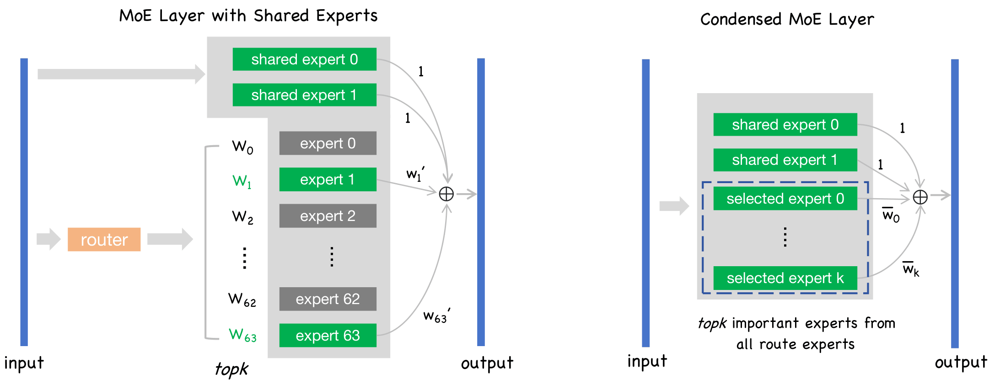
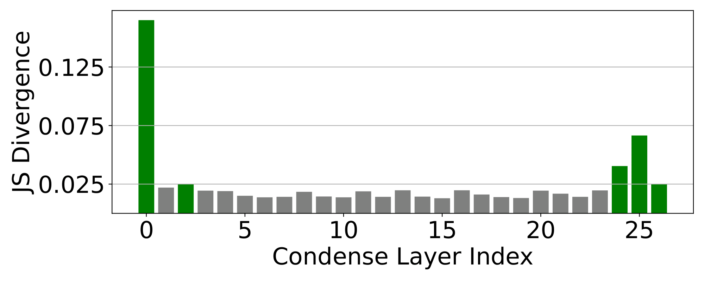
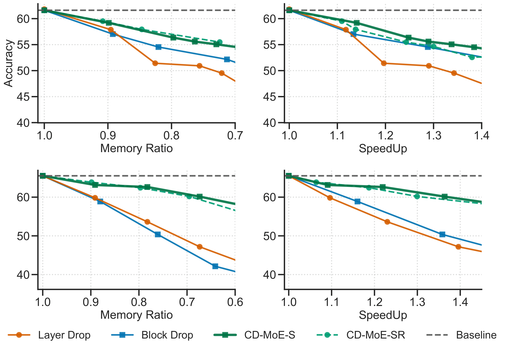
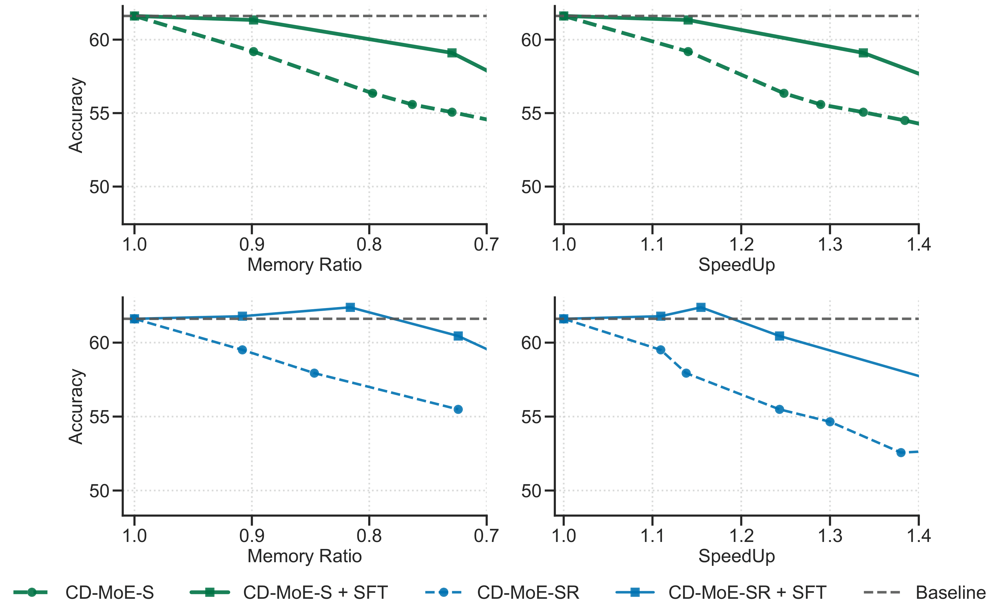

Overview
The core idea of CD-MoE is to Condense multiple routed experts in MoE models into several fixed experts, transforming sparse layers back into dense layers to achieve inference acceleration and memory savings. Our key contributions are:
- Proposed the Condense concept, consolidating multiple experts (e.g., 64) in certain layers into a smaller number (e.g., 6).
- Employed a greedy search based on JS divergence to select the most suitable experts and layers for condensation, maintaining 90%+ of the original accuracy.
- Through further lightweight fine-tuning, restored model quality to 95%+ of the pre-pruning level.
Method Illustration

Left: Original Deepseek MoE layer — tokens are dynamically routed to different experts via the gating network.
Right: Our ConDense-MoE layer — all tokens are routed to the same set of condensed experts, achieving:
- Parameter & memory savings via significant expert reduction
- Inference acceleration by removing the routing overhead
A Key Findings

We observe that different layers exhibit varying degrees of output embedding shift after Condense (especially the shallowest and deepest layers are most affected). Therefore, we propose using greedy search to select the most suitable layers for Condense.
Main Results

Upper: Results on DeepSeekMoE-16B; Lower: Results on Qwen1.5-MoE-A2.7B
CD-MoE-S: Only shared experts retained; CD-MoE-SR: Both shared experts and condensed routed experts retained.
Baseline methods Block Drop and Layer Drop aggressively prune all experts from selected layers. As a result, quality degradation becomes more severe as the pruning ratio increases.
In contrast, Condense preserves quality much more effectively by retaining and consolidating important experts rather than completely discarding them.
Light-weight Supervised Finetuning Results

After lightweight fine-tuning targeting only the Condense layers, model quality is further restored.
BibTeX
@misc{cao2025condensedontjustprune,
title={Condense, Don't Just Prune: Enhancing Efficiency and Performance in MoE Layer Pruning},
author={Mingyu Cao and Gen Li and Jie Ji and Jiaqi Zhang and Xiaolong Ma and Shiwei Liu and Lu Yin},
year={2025},
eprint={2412.00069},
archivePrefix={arXiv},
primaryClass={cs.LG},
url={https://arxiv.org/abs/2412.00069},
}
}